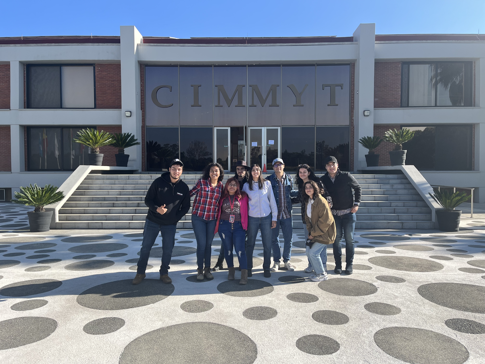
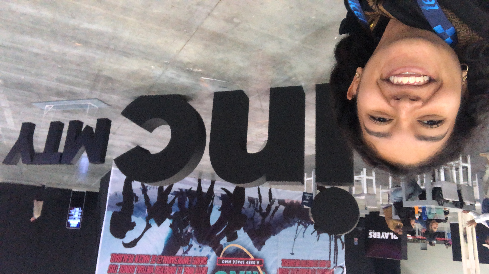
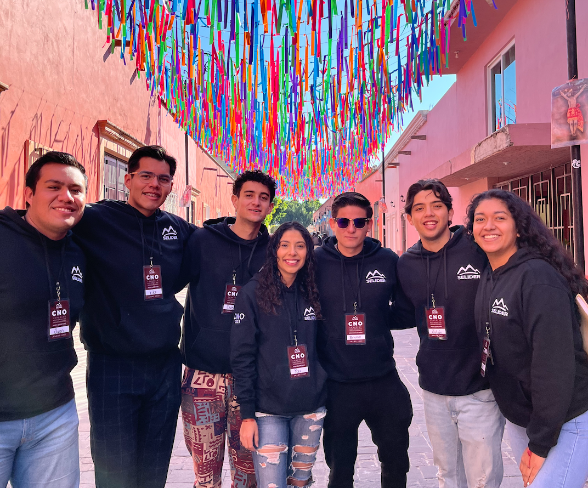
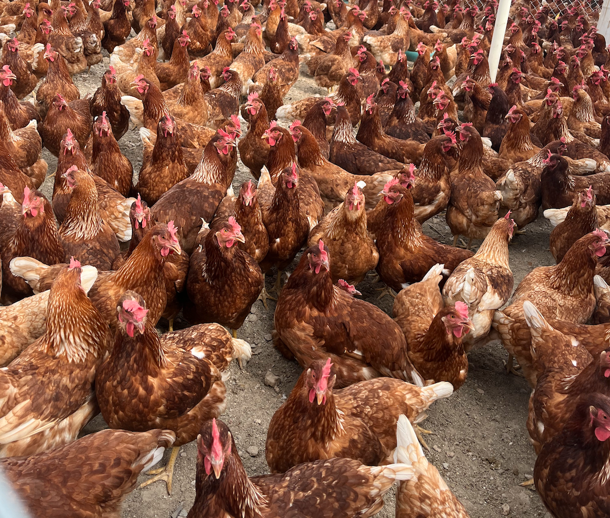
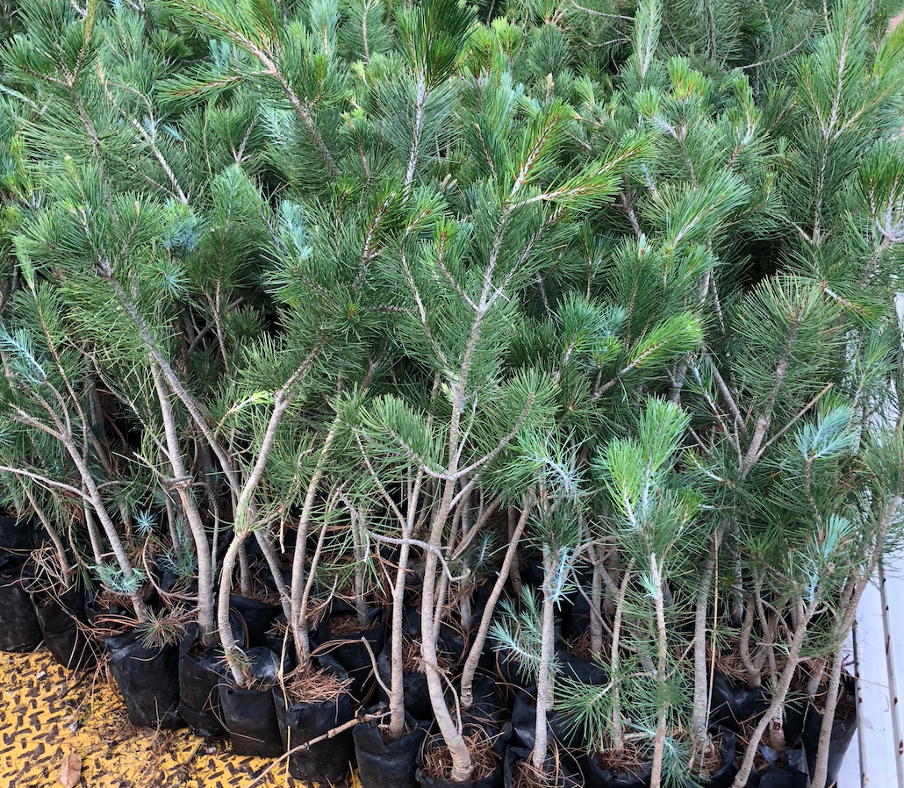

Experiencia

CNH de México
2025 - Actualidad
Monitoreo postventa de tractores, análisis de datos con FieldOps.

Presidenta SEIAG
2023 - Actualidad
Liderazgo de la Expo Agroalimentaria, fortalecimiento de conexiones profesionales.

Emprendimiento
2022 - Actualidad
Desarrollo de fertilizante orgánico, reconocimiento del Tec de Monterrey.

SELIDER Querétaro
2019 - 2024
Coordinadorea de reclutamiento, organización de seminarios estatales para estudiantes de útlimo año de secundaria.

Servicio Social UAQ
2024
Evaluación nutricional en gallinas ponedoras con dietas sostenibles.

Reforestaciones
2016 - 2019
Liderazgo en proyectos de reforestación con Cervecera Heineken.